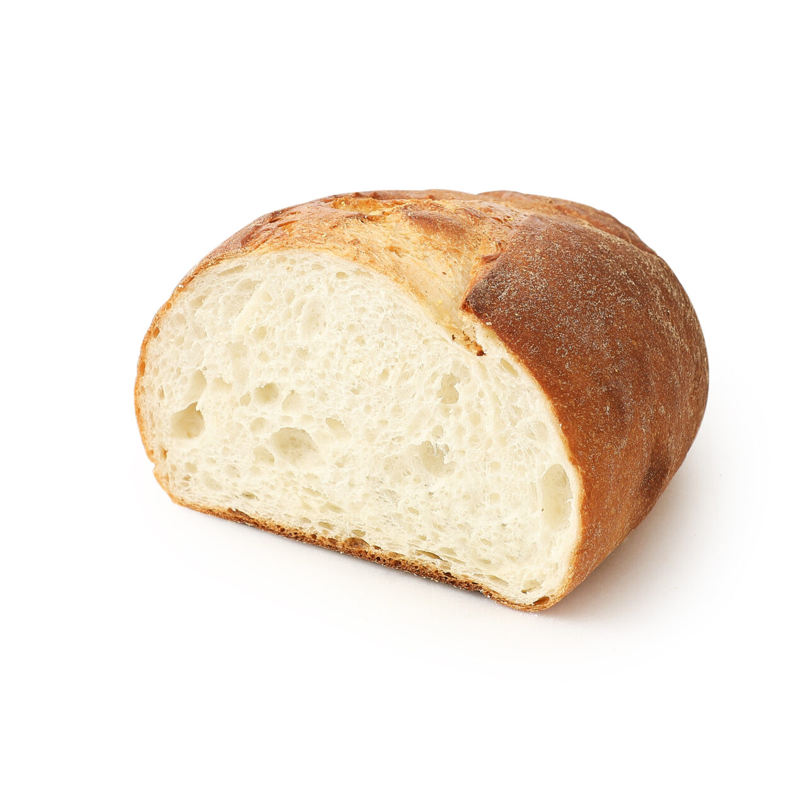

Best 2 쫄깃담백 토종효모빵(1/2)
빵 본연의 담백하고 구수한 풍미를 살린 쫄깃하고 부드러운 식감의 토종효모빵.
이거 진짜 맛있습니다. 에프에 구워서 아아랑 마시면 행복해.
근데 사두고 하루 지나면 맛 없어지니까 반드시 1/2짜리로 사 먹길 바랍니다.

영양정보
총 내용량: 145g · 1회 제공 칼로리: 385kcal
1회 제공량당 (% : 1일 영양성분기준치에 대한 비율) - 나트륨(mg/%) : 610/31 · 당류(g/%) : 5 · 포화지방(g/%) : 2/13 · 단백질(g/%) : 14/25
알르레기 정보
밀, 우유, 대두